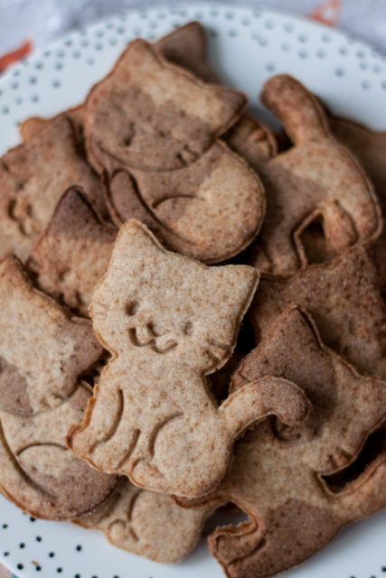
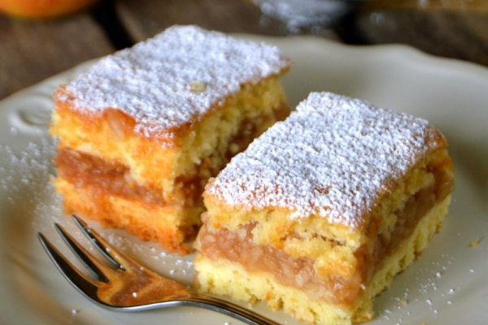
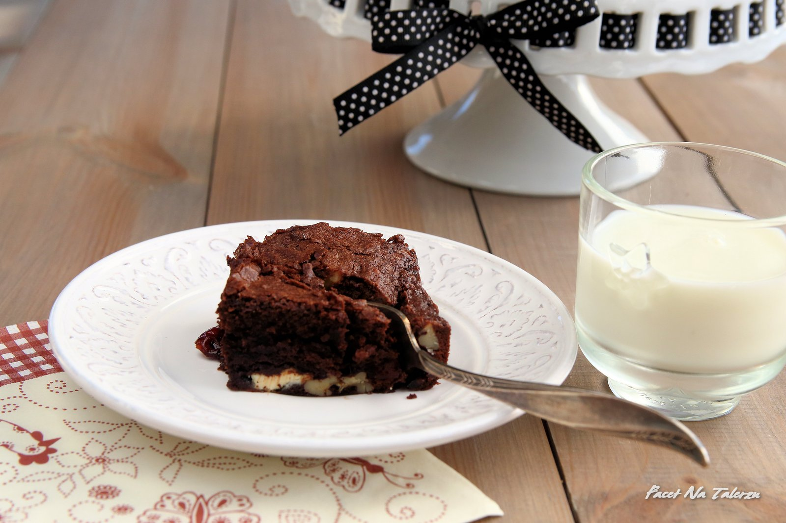
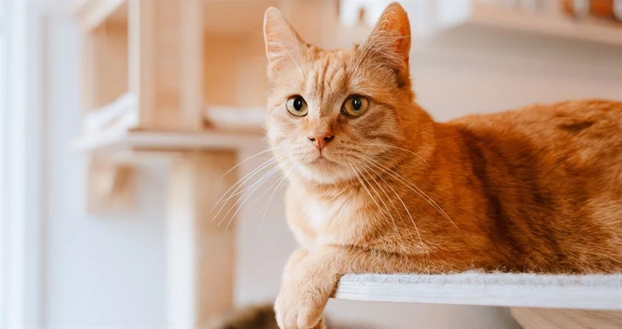
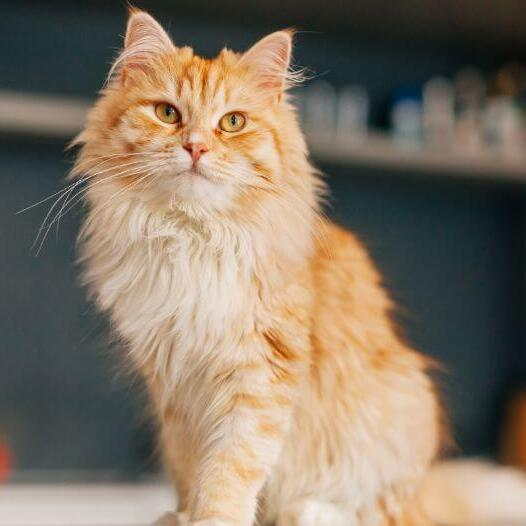
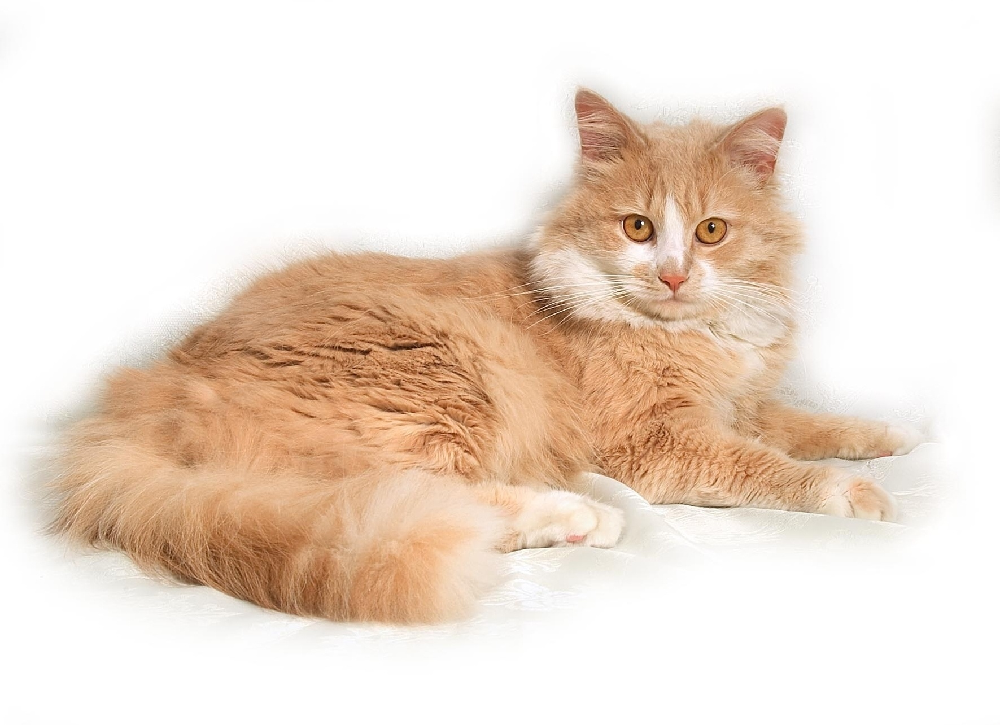
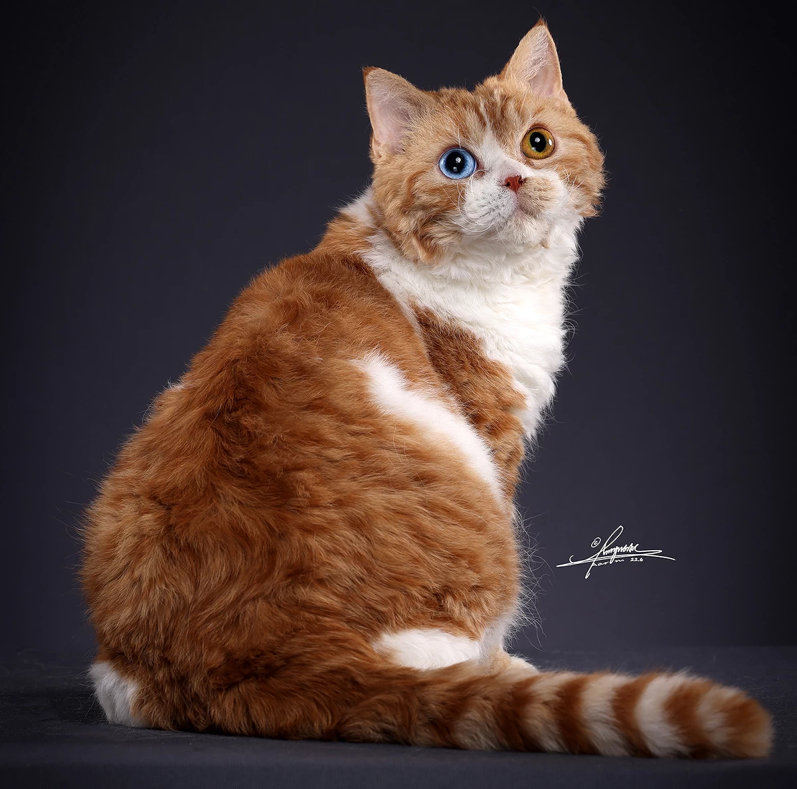

Kawy:
Łapka w Latte

Delikatne latte z pianką w kształcie kociej łapki.
Mruczące Cappuccino

Cappuccino z pianką miękką niczym kocie futerko.
Czarna Łapka

Klasyczna czarna kawa z nutą kociego uroku, czasem nawet i sierści.
Desery:
Kocie ciasteczka

Ciasteczka w kształcie kotów idealne do kawy.
Jabłecznik

Domowy jabłecznik, pachnący cynamonem i świeżymi jabłkami.
Brownie

Wilgotne, czekoladowe brownie z kawałkami gorzkiej czekolady i chrupiącymi orzechami.
O nas:
Witamy w jedynej swego rodzaju takiej kawiarni, gdzie miłośnicy kotów i kawy mogą połączyć obie te rzeczy w jedno, magicznie przytulne miejsce! A to wszystko za sprawą naszych wyjątkowych kotów.
Nasze koty:
Karmel

Karmelek to bardzo energiczny kotek lubiący zabawę oraz psoty. Bardzo chętnie pobawi się z każdym kto poświęci mu trochę czasu!
Cynamonek

Cynamonek to nasz dumny kot rasy perskiej. Uwielbia być głaskany, zwłaszcza za uszkami. Nigdy nie pogardzi czułością.
Imbir

Imbirek to kotek rasy syberyjskiej. Jest bardzo inteligentny i potrafi wiele sztuczek! Zanim jednak zobaczysz jakąś lepiej przyszykuj smaczki!
Kasztan

Kasztanek jest kotkiem rasy Selkirk Rex. Jest bardzo przyjazny i spokojny. Lubi pieszczoty i świetnie dogaduje się nawet z dziećmi!